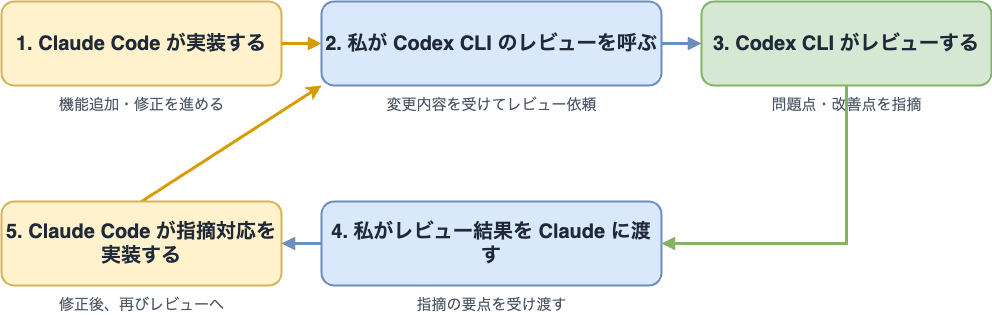
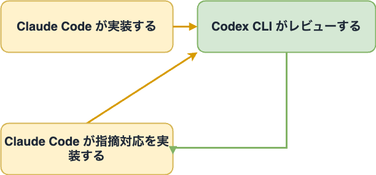

Claude Codeで実装、 Codexでレビュー、合わせて自走の企て
Claude Codeで実装、 Codexでレビュー、合わせて自走の企て
- Event:
【AI駆動開発】AI自走環境構築・運用スペシャル #1
- Presented:
2026/04/09 nikkie （スペース連打 or 矢印キーでめくります）
お前、誰よ？（Python使い の自己紹介）
nikkie（にっきー）
機械学習エンジニア・LLM・自然言語処理（We're hiring!）
Speeda AI Agent 開発（A2A提供）
自走 に強い興味 [1]
直近の個人開発フロー
私は 合わせて 使っています
Claude Code
Codex CLI
Claude Codeで実装（/feature-dev）使ってる方🙋
/feature-dev Add user authentication with OAuthclaude-plugins-official marketplaceの feature-dev プラグイン
% claude plugins marketplace add https://github.com/anthropics/claude-plugins-official
% claude plugins install feature-dev@claude-plugins-official鹿野さんもおすすめ
手戻りを減らしたいClaude Codeのfeature-devプラグインを使う
Feature Dev
A structured 7-phase workflow
code-explorer (Phase 2)
code-architect (Phase 4)
code-reviewer (Phase 6)
実装し切ったらCodexでレビュー（使ってる方🙋）
codex review --base main
インタラクティブでないレビュー。時間がかかるが非常に鋭い
（Slash command
/reviewもある）
OpenAIはCodexで一通りレビュー
今やっている Agents SDK の開発では gpt-5-codex による考慮漏れのレビューで何度も救ってもらっているし、チームの中では codex のレビューは全部自動で走っていて、それを一通りやった上で人の目が入るようになってきています。
— Kazuhiro Sera (瀬良) (@seratch_ja) 2025年9月27日
直近の開発フロー まとめ

openai/codex-plugin-cc は有効性の証左？ 🏃♂️
Claude Code のワークフローを維持したまま、Codex が強い場面だけ Codex を使えるようにする（Claude Code 向け Codex Plugin の紹介）
/codex:review適用事例：Pythonファイルに以下を書き込む
# /// script
# dependencies = [
# "httpx",
# ]
# ///20行 の参照実装
import re
import tomlkit
REGEX = r'(?m)^# /// (?P<type>[a-zA-Z0-9-]+)$\s(?P<content>(^#(| .*)$\s)+)^# ///$'
def add(script: str, dependency: str) -> str:
match = re.search(REGEX, script)
content = ''.join(
line[2:] if line.startswith('# ') else line[1:]
for line in match.group('content').splitlines(keepends=True)
)
config = tomlkit.parse(content)
config['dependencies'].append(dependency)
new_content = ''.join(
f'# {line}' if line.strip() else f'#{line}'
for line in tomlkit.dumps(config).splitlines(keepends=True)
)
start, end = match.span('content')
return script[:start] + new_content + script[end:]500行
Codex (GPT-5.4)がPythonの仕様を熟知していて 考慮漏れを指摘しまくる （10回近く）
20行の参照実装をもとにClaude Code (Sonnet 4.6)で実装していたが、Opus 4.6出動
効果ありそう！ここで担当を整理
- Claude Code:
実装
- Codex CLI:
レビュー
- nikkie:
受け渡し役
受け渡すだけの私って、 必要なくね ？
自動ループ の構築を試みる

レビューで指摘がなくなったり、前回と矛盾したりしたら止まる
私は takt に目をつけた 🎼（使ってる方🙋）
TAKT Agent Koordination Topology
対応：Claude Code、Codex、OpenCode、Cursor、GitHub Copilot CLI (v0.35.0)
$ npm install -g takt@">=0.34.0"作者nrsさんによる発信多数
MCPでやる方法も聞きます [3] 🏃♂️
claude mcp add --transport stdio codex -- codex mcp-server私が理解したtakt
コーディングエージェントに任せたいタスクの 仕様書
コーディングエージェントを ワークフロー に従わせて、仕様書を実装してもらえる
（完全に理解への道半ば）
taktのワークフロー [5]
YAMLファイル を書く
takt --workflow <workflow.yaml>コーディングエージェントの動き方を プログラミング
例： Workflow with Review より
name: with-review
max_movements: 10
initial_movement: implement
interactive_mode: passthrough
steps:
- name: implement
edit: true
required_permission_mode: edit
provider_options:
claude:
allowed_tools: [Read, Glob, Grep, Edit, Write, Bash, WebSearch, WebFetch]
rules:
- condition: Implementation complete
next: review
- condition: Cannot proceed
next: ABORT
instruction: |
Implement the requested changes.
- name: review
edit: false
provider_options:
codex:
allowed_tools: [Read, Glob, Grep, WebSearch, WebFetch]
rules:
- condition: Approved
next: COMPLETE
- condition: Needs fix
next: implement
instruction: |
Review the implementation for code quality and best practices.
実装とレビューのループ（抜粋）
initial_movement: implement
steps:
- name: implement
rules:
- condition: Implementation complete
next: review
- condition: Cannot proceed
next: ABORT
- name: review
rules:
- condition: Approved
next: COMPLETE
- condition: Needs fix
next: implement
実装が完了したらレビューへ
initial_movement: implement
steps:
- name: implement
rules:
- condition: Implementation complete
next: review
- condition: Cannot proceed
next: ABORT
修正が必要ならレビューから実装に戻る
steps:
- name: review
rules:
- condition: Approved
next: COMPLETE
- condition: Needs fix
next: implement
レビューで codex review を呼ぶように指示
instruction: |
Review the implementation for correctness, scope, and maintainability.
Run Codex CLI review first, then base your judgment on its output.
Do not modify files.
Run:
codex review --base main 2>&1
Summarize the findings and decide:
- If there are actionable issues, request fixes.
- If there are no actionable issues, approve.
If acceptable, output the status for the first rule.
If fixes are needed, output the status for the second rule and explain what to fix.
taktの仕様書
仕様書は渡してもいいし、 一緒に作ってもいい
taktと起動すると インタラクティブモード に入って仕様書を作れる
インタラクティブモード（抜粋）
対話モードを選択してください:
❯ アシスタント (default)
確認質問をしてから指示書を作成
パススルー # <- 仕様書が手元にある時
入力をそのままタスクとして渡すTAKT でやり取りせず AI との会話の末に Issue を作らせて、それを takt add #99 で引き渡すという裏テクもあります
— nrs (@nrslib) 2026年4月6日
調査とかしながらシームレスに移行する場合にどうぞ！ https://t.co/xEXkx5OtLn
まとめ🌯：Claude Codeで実装、 Codexでレビュー、合わせて自走の企て
直近の開発フローの紹介
taktを使って 自動ループ の構築を試みた（さらに育てていくぞ💪）
直近の開発フロー
- Claude Code:
実装（
/feature-dev）- Codex CLI:
レビュー（
codex review --base main）- nikkie:
受け渡し役
taktを使った自動ループ（一歩目）
- implement:
実装（Opus 4.6）
- review:
codex reviewを呼び出してレビュー（Opus 4.6）
止まるまで繰り返し実行される
ご清聴ありがとうございました
Happy Development ❤️🤖
OSSサポートに感謝申し上げます
SpeechRecognition (9k star) メンテナ